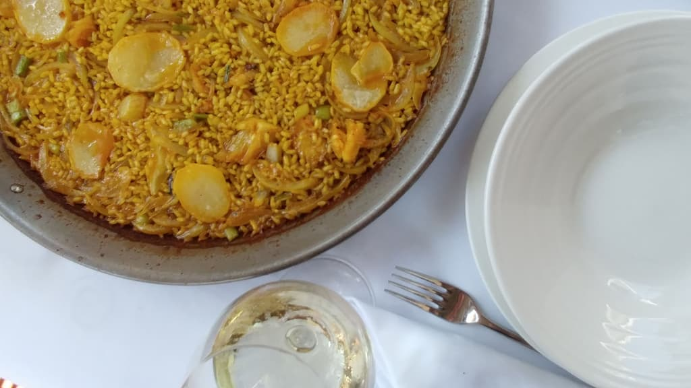

Inicio / Carta
VAL · ES · ENLa carta
La carta de la casa.
Todo nuestro producto llega a diario de la Lonja de Dénia. La carta está escrita, como en la mesa, en valenciano, castellano e inglés: elige cómo quieres leerla.
Tapes típiques de la MarinaTapas típicas de la MarinaMarina Alta tapas
-
TorratTorratTorrat
Pebre i albergínia rostits a la brasaPimiento y berenjena asados a la brasaFlame-roasted pepper and aubergine
8,50 € -
TomacatTomacatTomacat
Pebre, albergínia, tomaca i saladuresPimiento, berenjena, tomate y salazonesPepper, aubergine, tomato and salt-cured fish
9,00 € -
Bull amb cebaBull con cebollaBull with onion
Bull de tonyinaEstómago de atún, plato de la costaCured tuna stomach, a coastal classic
9,00 € -
Gambeta amb bledaCamarones con acelgasSmall shrimp with chard
8,00 € -
Polp guisatPulpo guisadoStewed octopus
10,50 € -
XonesCaracolesSnails
9,50 € -
Manetes de porcManitas de cerdoPig's trotters
11,50 € -
Pilotes de putxero (unitat)Pelotas de puchero (unidad)Stew meatball (each)
5,00 € -
Figatells (unitat)Figatells (unidad)Figatell (each)
Xicoteta hamburguesa de la terraPequeña hamburguesa tradicionalSmall traditional pork patty
3,75 € -
MandonguillesAlbóndigasMeatballs
7,00 € -
Croquetes de bacallar o pernilCroquetas de bacalao o jamónSalt cod or ham croquettes
10,00 € -
Coques de dacsa (unitat)Cocas de maíz (unidad)Corn flatbread (each)
Torrat, tomacat, gamba amb bleda o tonyinaTorrat, tomacat, camarón con acelgas o atúnTorrat, tomacat, shrimp with chard or tuna
4,00 € -
Coca de dacsa completa (unitat)Coca de maíz completa (unidad)Corn flatbread "completa" (each)
Tomaca, tonyina, ou i anxovaTomate, atún, huevo y anchoaTomato, tuna, egg and anchovy
4,50 € -
Verdura a la planxaVerdura a la planchaGrilled vegetables
12,00 € -
Pernil ibèricJamón ibéricoIberian ham
19,00 € -
Formatge manxegoQueso manchegoManchego cheese
10,00 €
Salat i secSalado y secoSalt-cured & dried
-
Polp secPulpo secoSun-dried octopus
19,00 € -
Capellans o mussolaCapellanes o cazón secoDried capellans or dogfish
9,50 € -
Anxova (unitat)Anchoa (unidad)Anchovy (each)
3,10 € -
MoixamaMojamaSalt-cured tuna loin
18,00 € -
Saladura de la MarinaSalazones de la MarinaMarina salt-cured fish platter
18,00 € -
Ganya de bacallarCortezas de bacalao fritasFried salt cod skin
8,50 € -
Bacallar amb fons de tomacaBacalao con fondo de tomateSalt cod with grated tomato
14,50 € -
Aladroc en vinagreBoquerones en vinagreAnchovies in vinegar
8,50 €
Tapes de peixTapas de pescadoFish tapas
-
Sepionet a la planxaSepionet a la planchaGrilled baby cuttlefish
18,00 € -
TellinesTellinasTellina clams
16,00 € -
Fetge de rapHígado de rapeMonkfish liver
9,50 € -
Calamar a la planxaCalamar a la planchaGrilled squid
16,00 € -
SèpiaSepiaCuttlefish
11,50 € -
Gambeta de DéniaGambita de DéniaSmall Dénia shrimp
17,00 € -
Clotxineta del Mediterrani al vaporMejillón del Mediterráneo al vaporSteamed Mediterranean mussels
9,50 € -
Clòtxines al vaporMejillones al vaporSteamed mussels
9,50 € -
Polp a la gallegaPulpo a la gallegaGalician-style octopus
17,00 € -
Gambeta saltejada amb alletsGambita salteada con ajitosShrimp sautéed with young garlic
17,00 € -
Cigaletes saltejades amb alletsCigalitas salteadas con ajitosSmall langoustines with young garlic
15,00 € -
Fritura de peix de la badiaPescadito frito de la bahíaFried fish from the bay
15,00 € -
Calamars a la romanaCalamares a la romanaBattered squid rings
13,00 € -
Calamars a l'andalusaCalamares a la andaluzaAndalusian-style fried squid
15,00 € -
Calamaret arrebossatChipirones rebozadosFried baby squid
16,00 € -
Aladroc arrebossatBoquerones rebozadosFried anchovies
11,00 € -
OstresOstrasOysters
4,50 € -
Pa sense glutenPan sin glutenGluten-free bread
2,20 € -
Pa amb allioli o tomaca (per persona)Pan con allioli o tomate (por persona)Bread with allioli or tomato (per person)
1,70 €
Ensalades i verdEnsaladas y verdeSalads & greens
-
MulladorMulladorMullador
Tomaca madura, bacallar, all i oli d'oliva verge extraTomate maduro, bacalao, ajo y AOVERipe tomato, salt cod, garlic and extra virgin olive oil
11,00 € -
Amanida especialEnsalada especialSpecial salad
Amb ou i tonyinaCon huevo y atúnWith egg and tuna
11,00 € -
Amanida amb torrat i ventresca de tonyinaEnsalada con escalivada y ventresca de atúnRoasted vegetable salad with tuna belly
13,00 € -
Espàrrecs amb dues salsesEspárragos con dos salsasAsparagus with two sauces
11,00 € -
Pernil amb melóJamón con melónHam with melon
16,00 € -
Amanida Les MarinesEnsalada Les MarinesLes Marines salad
Amb formatge de cabraCon queso de cabraWith goat cheese
13,00 €
Sopes i pastesSopas y pastasSoups & pasta
-
ConsoméConsoméMeat broth
4,50 € -
Crema de verduresCrema de verdurasCream of vegetables
8,00 € -
Sopa de carnSopa de cocidoMeat stew soup
8,50 € -
Sopa de peixSopa de pescadoFish soup
13,00 € -
Gaspatxo andalúsGazpacho andaluzAndalusian gazpacho
8,50 € -
EspaguetisEspaguetisSpaghetti
7,50 €
Peix de la badiaPescado de la bahíaFish from the bay
El peix es podrà preparar a la sal, al forn, a l'espatla o en llandeta, segons disponibilitat.El pescado se puede preparar a la sal, al horno, a la espalda o en llandeta, según disponibilidad.Fish can be cooked in salt crust, baked, butterflied "a la espalda" or in llandeta, depending on availability.
-
Graellada de peix i marisc (per a 2 persones)Parrillada de pescado y marisco (para 2 personas)Grilled fish and seafood platter (for 2)
65,00 € -
½ Graellada de peix i marisc½ Parrillada de pescado y marisco½ Grilled fish and seafood platter
35,00 € -
Peix de la Llotja a la planxa (del dia)Pescado de la Lonja a la plancha (del día)Grilled fish of the day from Dénia's market
Lluç, moll de roca, pelaia o llobarroPescadilla, salmonete de roca, lenguadina o lubinaWhiting, red mullet, megrim or sea bass
20,50 € -
Peix de rocaPescado de rocaRockfish
Escorpa, gall de Sant Pere, déntol, mero o llobarroCabracho, San Pedro, dentón, mero o lubinaScorpionfish, John Dory, dentex, grouper or sea bass
34,00 € -
Emperador a la planxaEmperador a la planchaGrilled swordfish
18,00 € -
Tonyina a la planxaAtún a la planchaGrilled tuna
20,50 € -
Rap de la badia a la planxaRape de la bahía a la planchaGrilled monkfish from the bay
20,50 € -
Llenguado a la planxaLenguado a la planchaGrilled sole
24,50 € -
Llenguado a la meunièreLenguado a la meunièreSole meunière
26,00 €
MariscsMariscosShellfish
-
Gamba roja de Dénia nº 1, a la planxa o bollida (100 g)Gamba roja de Dénia nº 1, a la plancha o hervida (100 g)Dénia red prawn nº 1, grilled or boiled (100 g)
S/MS/MMP -
Gamba roja de Dénia nº 2, a la planxa o bollida (100 g)Gamba roja de Dénia nº 2, a la plancha o hervida (100 g)Dénia red prawn nº 2, grilled or boiled (100 g)
S/MS/MMP -
Cigales a la planxa o bollides (200 g)Cigalas a la plancha o hervidas (200 g)Langoustines, grilled or boiled (200 g)
22,00 € -
Ostres Gillardeau (unitat)Ostras Gillardeau (unidad)Gillardeau oysters (each)
4,50 € -
Llagosta (100 g)Langosta (100 g)Spiny lobster (100 g)
14,00 € -
Llamàntol (peça)Bogavante (pieza)Lobster (whole)
30,50 €
Guisos marinersGuisos marinerosSeafood stews
Mínim dues persones, per encàrrec.Mínimo dos personas, por encargo.Minimum two people, order in advance.
-
Suquet de peixSuquet de pescadoFish suquet
25,00 € -
Suquet de rapSuquet de rapeMonkfish suquet
26,00 € -
Allipebre de rapAll i pebre de rapeMonkfish all i pebre (garlic & paprika)
26,50 € -
Suquet de peix i llamàntolSuquet de pescado y bogavanteFish and lobster suquet
35,00 € -
Suquet de peix i llagostaSuquet de pescado y langostaFish and spiny lobster suquet
48,00 €
Arrossos secsArroces secosDry rice dishes
Preu per ració. Mínim dues racions. Si es vol més d'un arròs per taula, es farà segons disponibilitat de la cuina.Precio por ración. Mínimo dos raciones. Si se quiere más de un arroz por mesa, se hará según disponibilidad de la cocina.Price per serving. Minimum two servings. More than one rice per table depends on kitchen availability.
-
Arròs a bandaArroz a bandaArroz a banda
El de la Marina, amb fumet de peixEl de la Marina, con fumet de pescadoRice cooked in a rich fish stock
15,00 € -
Arròs a la marineraArroz a la marineraSeafood rice
17,00 € -
Arròs negreArroz negroBlack rice (squid ink)
16,00 € -
Arròs del senyoretArroz del señoretSeñoret rice
Tot pelatTodo el marisco peladoAll the seafood already peeled
17,50 € -
Arròs amb llamàntolArroz con bogavanteLobster rice
27,00 € -
Arròs mariner amb rajadaArroz marinero con rayaSeafood rice with skate
18,00 € -
Paella valencianaPaella valencianaValencian paella
Pollastre i conill. Opció caragols +0,50Pollo y conejo. Opción caracoles +0,50Chicken and rabbit. Snails optional +0.50
16,00 € -
Paella de l'horta, carn i verduresPaella de la huerta, carne y verdurasGarden paella, meat and vegetables
Caragols opcional +0,50Caracoles opcional +0,50Snails optional +0.50
16,00 € -
Paella de verduraPaella de verduraVegetable paella
15,00 € -
Paella de ceba i bacallarPaella de cebolla y bacalaoOnion and salt cod paella
15,50 € -
Paella d'aladroc i espinacsPaella de boquerones y espinacasAnchovy and spinach paella
15,50 € -
Paella mixtaPaella mixtaMixed paella
18,00 € -
Arròs al forn (per encàrrec)Arroz al horno (por encargo)Oven-baked rice (order in advance)
15,00 € -
FideuadaFideuáFideuà
De fideu fiDe fideo finoThin noodles cooked like a paella
17,00 € -
Fideuada de bolets i foie d'ànecFideuá de setas y foie de patoFideuà with mushrooms and duck foie
22,00 €
Arrossos melosos o caldososArroces melosos y caldososCreamy & brothy rice
Tots els arrossos es poden preparar secs, melosos o caldosos. Mínim dues racions.Todos los arroces se pueden preparar secos, melosos o caldosos. Mínimo dos raciones.Every rice can be made dry, creamy or brothy. Minimum two servings.
-
Arròs caldós a la marineraArroz caldoso a la marineraBrothy seafood rice
17,50 € -
Arròs caldós amb calamar i verduraArroz caldoso con calamar y verduraBrothy rice with squid and vegetables
17,50 € -
Arròs caldós amb polp i verduraArroz caldoso con pulpo y verduraBrothy rice with octopus and vegetables
17,50 € -
Arròs caldós amb rap i verduraArroz caldoso con rape y verduraBrothy rice with monkfish and vegetables
18,00 € -
Arròs caldós de carn i verduraArroz caldoso de carne y verduraBrothy rice with meat and vegetables
16,00 € -
Arròs amb fesols i napsArroz con alubias y nabosRice with beans and turnips
De temporada i per encàrrecDe temporada y por encargoSeasonal, order in advance
16,00 € -
Arròs de putxero amb pilotaArroz de puchero con pelotaStew rice with meatball
9,50 €
CarnsCarnesMeat
Totes les carns es poden preparar amb salsa de rocafort, pebre o bolets (+2,50).Todas las carnes se pueden preparar con salsa roquefort, pimienta o setas (+2,50).Any meat can come with Roquefort, pepper or mushroom sauce (+2.50).
-
Xulles de xaiChuletas de corderoLamb chops
19,50 € -
Entrecot de vedellaEntrecot de terneraBeef entrecôte
19,00 € -
Mitjana de vaca madura, 45 dies (aprox. 1 kg)Chuletón de vaca madurada 45 días (aprox. 1 kg)45-day aged beef rib steak (approx. 1 kg)
33,00 € -
Rellom de vedella a la planxaSolomillo de ternera a la planchaGrilled beef tenderloin
24,00 € -
Rellom de vedella amb foieSolomillo de ternera con foieBeef tenderloin with foie
28,00 € -
Cordon bleuCordon bleuCordon bleu
13,00 € -
EscalopaEscalopeEscalope
13,00 € -
Pollastre arrebossatPollo empanadoBreaded chicken
10,50 €
Postres de la casaPostres caserosHomemade desserts
-
Pasta fullada amb xocolate calentHojaldre con chocolate calientePuff pastry with hot chocolate
8,00 € -
Gelat d'ametlaHelado de almendraAlmond ice cream
7,00 € -
Flam de carabassaFlan de calabazaPumpkin flan
6,50 € -
TiramisúTiramisúTiramisu
7,50 € -
Flam d'ouFlan de huevoEgg flan
4,50 € -
Flam amb nataFlan con nataEgg flan with cream
5,00 € -
Flam d'avellanaFlan de avellanaHazelnut flan
6,00 € -
Flam de caféFlan de caféCoffee flan
6,00 € -
Crema catalanaCrema catalanaCrema catalana
5,00 € -
FlametTocinillo de cieloTocinillo de cielo (egg-yolk custard)
6,50 € -
Mousse de xocolateMousse de chocolateChocolate mousse
6,50 € -
NatillesNatillasCustard
4,50 € -
Pastís de formatgeTarta de quesoCheesecake
6,50 € -
Pastís al whiskyTarta al whiskyWhisky cake
7,00 € -
Nous amb nataNueces con nataWalnuts with cream
6,00 € -
Maduixes amb nata (temporada)Fresas con nata (temporada)Strawberries and cream (seasonal)
6,50 € -
Sorbet de llima al cavaSorbete de limón al cavaLemon sorbet with cava
6,50 € -
Sorbet de mandarinaSorbete de mandarinaMandarin sorbet
6,50 € -
Sorbet de mangoSorbete de mangoMango sorbet
6,50 € -
Formatge amb codonyQueso con membrilloCheese with quince
6,00 € -
Formatge (postre)Queso (postre)Cheese (dessert)
7,50 € -
Pinya naturalPiña naturalFresh pineapple
6,50 € -
Fruita del tempsFruta del tiempoSeasonal fruit
6,00 € -
Bola de gelat (unitat)Bola de helado (unidad)Scoop of ice cream
2,90 €
Celíacos
Algunos platos con gluten se pueden preparar para celíacos si nos lo dices al pedir. Tenemos pan sin gluten.
Disponemos de información sobre alérgenos: pregúntanos.
Precios
IVA incluido. Arroces, precio por ración (mínimo dos). S/M: según mercado.
Carta 2025. Los precios pueden variar: la carta de la mesa es la que vale.

—A taula
¿Ya sabes qué arroz pedir?
Reserva online entre semana. Fines de semana, festivos y encargos, por teléfono.